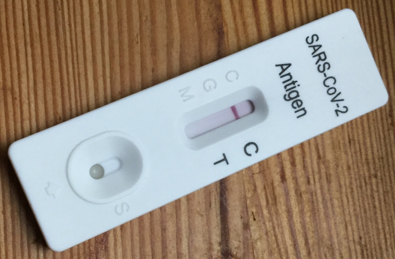

About
Since with SARS-CoV-2 people are infectious before they get sick, and since social distancing is sometimes not possible and overall hard to bear over an extended period of time, in order to end the pandemic, easily available testing with quick results would be needed.
Rapidtests is a volunteer organisation aiming to get widely available, easy to use and cheap antigen tests against SARS-CoV-2. And although being probably the least important team member, I take pride in participating in the German chapter of rapidtests.
Other team members wrote concepts and were in the media quite a lot. My activities were starting and administrating a facebook group, sometimes writing meeting protocols, making videos about my experiences with taking rapid tests (with nasopharyngeal swab and with nasal swab) and subtitling the official video.
My Experience with it
It was sad to see the German healthcare policy paralysed by perfection
and that things were terribly organised, like the local health
authorities and the vaccination. In some sense, participating in the
group was a way to uphold a little bit of ownership, similarly to
sewing masks in spring.
Apart from wanting to help end the pandemic, I found rapid tests a
great tool to not go crazy while the pandemic would last. One can't
behave paranoid for a long time without becoming paranoid, and having
antigen tests means being able to assess risk better and living less
in constant fear. Rapid tests are a tool against the pandemic and they
are also a mental health tool in a pandemic, that I wished to exist
for me and for others.
Further links
Text last updated: March 3rd 2021